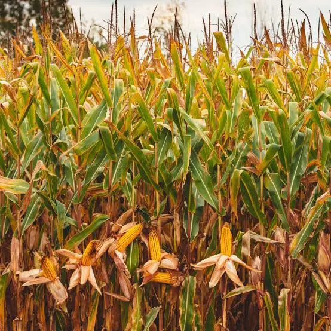
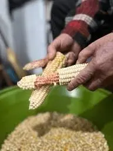
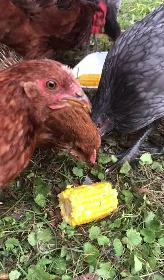

Can Chickens Eat Corn? Growing Field Corn for Chickens
Field corn is one of the most familiar grain crops for poultry feed and can provide backyard chicken keepers with a high-energy supplemental grain harvest when it is grown, dried, stored, and fed correctly. Successful production depends on proper pollination, maturity, drying, and careful storage.
🌽 Can Chickens Eat Corn?
Yes. Chickens can eat clean corn in several forms, including whole dry kernels, cracked corn, coarsely ground corn, plain cooked corn, fresh sweet corn, sprouted kernels, and thoroughly dried ears. Corn should remain a supplemental food alongside a complete poultry ration rather than replacing balanced feed.
Most healthy adult chickens can eat whole raw field-corn kernels when appropriate insoluble grit is available. Corn does not normally need to be cooked before feeding, although whole kernels should be introduced gradually and offered in measured amounts.
Chickens may also eat plain cooked corn after it has cooled. Serve it without butter, oils, salt, sugar, milk, sauces, garlic, onions, or other seasonings.
Other practical forms include:
- Cracked corn: Smaller pieces are easy to scatter or blend with other grains, but cracked corn deteriorates faster during storage than intact kernels.
- Fresh sweet corn: Plain kernels or a clean cob may be offered occasionally, although sweet corn contains more moisture and is not intended for long-term dry storage.
- Sprouted corn: Clean, untreated kernels may be sprouted under sanitary conditions. Good rinsing, drainage, airflow, and mold prevention are essential.
- Fermented corn: Corn may be included in properly managed fermented feed. Discard any batch that develops mold, slime, rotten odors, unusual discoloration, or other signs of spoilage.
- Whole dried ears: Sound, thoroughly dried ears may be offered as pecking enrichment.
Corn is primarily an energy grain and contains very little calcium. It does not provide the complete amino-acid, vitamin, mineral, and protein balance required by chicks, growing birds, or laying hens. Never feed moldy, musty, heated, chemically treated, insect-damaged, or otherwise contaminated corn.
🌽 Is Field Corn a Good Crop for Chickens?
Field corn is one of the most familiar feed grains in poultry production. Mature kernels contain abundant starch, relatively little fiber, and enough oil to make corn a valuable source of dietary energy.
For backyard chicken keepers, field corn may provide:
- Dry whole grain
- Cracked or coarsely ground grain
- Whole dried ears for enrichment
- Grain that can be stored into winter
- A familiar and widely available crop
- Garden windbreak or seasonal screening
- Stalks and husks for compost or garden use
Corn’s greatest weakness is nutritional balance. It is not a high-quality protein crop, contains very little calcium, and does not provide the vitamins and minerals required by productive laying hens.
Is This Crop Right for Your Flock and Backyard?
Crop success depends on more than whether chickens can eat it. Climate, growing space, sunlight, soil, water, labor, processing, equipment, harvest goals, and storage all affect whether it is a practical choice for your property.
🌱 Use the Feed Crop Planner →📋 Field Corn Quick Facts
🌱 What Kind of Corn Should You Grow?
“Corn” includes several types with different uses. A variety selected for fresh sweet corn is not the same as a variety selected to mature into dry animal-feed grain.
Dent Corn
Dent corn is the most common type of field corn used for animal feed and industrial grain production.
The mature kernel develops a visible indentation as the soft starch near the crown dries.
Flint Corn
Flint corn has a harder outer starch layer and may perform well in some short-season or traditional growing regions.
Some colorful flint varieties are grown for food, decoration, or grain.
Sweet Corn
Sweet corn is selected for tender, sugary kernels harvested before full grain maturity.
It can be shared with chickens, but it is not the main crop covered by this dry-grain guide.
Choose an early or midseason dent or flint corn with enough time to reach full grain maturity before your typical fall frost and prolonged wet weather.
🌽 Hybrid Versus Open-Pollinated Field Corn
| Seed Type | Advantages | Limitations |
|---|---|---|
| Hybrid | Uniform maturity, improved disease resistance, stronger stalks, and potentially higher yield. | Saved seed will not reliably reproduce the same performance or characteristics. |
| Open-pollinated | Seed may be saved when isolation and selection are managed correctly. | May be less uniform and sometimes lower yielding than adapted modern hybrids. |
| Heirloom or traditional landrace | Distinctive colors, regional history, food uses, and genetic diversity. | Maturity, lodging resistance, disease resistance, and feed yield vary greatly. |
For a first feed-corn plot, an adapted hybrid may offer the most dependable harvest. Open-pollinated seed is useful when seed saving is an important goal.
🗓 When to Plant Field Corn
Corn is frost sensitive. Plant after severe frost danger has passed and soil at planting depth has reached at least approximately 50°F.
For beginning gardeners, waiting until soil is around 60°F and a warming weather pattern is expected may improve emergence and reduce losses from cold, wet conditions.
| Region | General Planting Approach | Likely Grain Harvest |
|---|---|---|
| Cold North | Plant after frost once soil is warm. Choose a short-season dent or flint variety. | Early through mid-fall before prolonged cold rain or hard freeze. |
| Midwest and Northeast | Plant during mid- to late spring after soil reaches approximately 50°F and continues warming. | Fall after physiological maturity and field drying. |
| Upper South | Plant in spring after frost. Earlier planting may allow pollination before severe midsummer heat. | Late summer through fall. |
| Deep South | Plant from late winter through spring according to local Extension recommendations. | Summer through fall, with prompt drying especially important in humid weather. |
| Southwest | Plant after frost when soil is warm and dependable irrigation is available. | Late summer through fall, depending on elevation and planting date. |
| Pacific Northwest | Plant in the warmest available location after frost. Use an early variety in short-season areas. | Early fall before persistent cold rain. |
| Coastal West | Plant after frost once soil is warm. Inland valleys are generally more dependable for mature grain. | Late summer through fall. |
📐 How Much Space Does Field Corn Need?
A practical home-garden spacing range is approximately:
- 8–12 inches between plants
- 30–36 inches between rows
- At least four short rows arranged in a block
Using midpoint spacing of approximately 10 inches between plants and 33 inches between rows gives a planning estimate of:
| Growing Area | Approximate Plants | Important Limitation |
|---|---|---|
| 10 square feet | About 4 plants | Too small for dependable wind pollination by itself. |
| 50 square feet | About 21 plants | Arrange plants in several short rows rather than one line. |
| 100 square feet | About 43 plants | Actual grain yield depends heavily on pollination and growing conditions. |
Corn planted in one long narrow row may fit mathematically but pollinate poorly. A compact block gives wind-blown pollen more opportunities to reach the silks.
🌬 Why Corn Must Be Planted in a Block
Corn is pollinated primarily by wind. The tassel at the top of each plant releases pollen, while each silk emerging from an ear connects to a potential kernel.
When pollen does not reach a silk, the corresponding kernel may fail to develop.
Planting in a block helps because:
- More tassels surround each ear
- Pollen moves between several nearby rows
- Changing wind direction still carries pollen across plants
- Ear filling is generally more dependable than in one isolated row
A useful small-plot arrangement might be four rows that are each 8–12 feet long rather than one row 32–48 feet long.
🪴 How to Plant Field Corn
- Choose full sun. Corn needs at least six to eight hours of direct sunlight and should not be shaded by buildings or trees.
- Wait for warm soil. Plant after frost danger and when the soil is at least approximately 50°F, preferably warmer for beginners.
- Prepare fertile, well-drained soil. Remove weeds and loosen compacted areas without creating a fluffy, dry seedbed.
- Plant approximately 1½–2 inches deep. Use slightly shallower planting in cool moist soil and slightly deeper planting where the surface dries quickly.
- Arrange several short rows. Do not rely on one long row for wind pollination.
- Water thoroughly. Maintain enough moisture for uniform germination and root development.
- Thin crowded seedlings. Keep the healthiest plants at the spacing appropriate for the variety.
- Control weeds early. Young corn competes poorly when surrounded by established weeds.
🌱 Soil and Fertility
Corn is a heavy-feeding crop compared with clover, cowpeas, or many leafy garden plants. A productive grain crop removes substantial nitrogen, phosphorus, potassium, and other nutrients from the soil.
A soil test should guide:
- Soil pH correction
- Nitrogen application
- Phosphorus
- Potassium
- Organic matter
- Possible sulfur and micronutrient needs
The Backyard Chicken Planner database uses a practical soil-pH range of approximately 5.8–7.0.
Excess salts and ammonia near the seed can reduce germination or injure young roots. Apply fertilizer according to soil-test and product guidance.
💧 Watering Field Corn
Corn requires dependable moisture for good grain production. It is particularly sensitive to stress around tasseling, silking, pollination, and early grain filling.
Water stress during this period may cause:
- Delayed silk emergence
- Poor pollen capture
- Missing kernels
- Short ears
- Shallow kernels
- Lower grain weight
- Greater vulnerability to some ear and grain-quality problems
Water deeply enough to moisten the root zone. Avoid repeated shallow watering and do not keep the soil continuously saturated.
🌽 Understanding Tassels, Silks, and Kernels
The tassel produces pollen. The silks emerge from the developing ear. Each silk must receive viable pollen for its connected kernel to develop properly.
Successful pollination depends on:
- Healthy tassels
- Silks emerging at the correct time
- Adequate moisture
- Moderate temperatures
- Nearby corn plants
- Wind movement
- Limited insect damage to silks
Silks that dry before receiving pollen can result in blank areas on the cob.
🌡 Heat and Drought During Pollination
Corn can grow vigorously in warm conditions, but extreme heat combined with drought during flowering may reduce pollen viability, delay silks, and interfere with kernel set.
To reduce risk:
- Plant at the locally recommended time
- Select an adapted maturity group
- Maintain soil moisture before tasseling
- Use mulch where practical
- Control weeds that compete for water
- Avoid excessive plant crowding in dry conditions
🐛 Common Field Corn Pests
| Problem | What You May Notice | Possible Response |
|---|---|---|
| Corn earworm | Chewed kernels and caterpillars near the ear tip | Choose adapted varieties, monitor silking ears, harvest promptly, and follow food-crop Extension guidance. |
| European corn borer | Holes, stalk tunneling, broken stalks, or damaged ears | Remove crop residue, rotate crops, and use resistant varieties where appropriate. |
| Fall armyworm | Ragged leaf feeding and damaged whorls | Inspect young plants frequently and follow regional treatment thresholds. |
| Cutworms | Young plants cut near soil level | Control weeds before planting and inspect the soil around damaged seedlings. |
| Raccoons | Ears pulled down, husks torn open, stalks flattened | Use strong electric or physical fencing and harvest promptly. |
| Deer | Missing leaves, ears, or broken plants | Use adequate fencing and avoid placing the plot beside established wildlife paths. |
| Wild birds | Damaged kernels or opened husks | Use deterrents, netting where practical, and timely harvest. |
🦠 Common Corn Diseases and Ear Rots
| Problem | What You May Notice | Why It Matters |
|---|---|---|
| Aspergillus ear rot | Olive-green or yellow-green mold, often after heat, drought, or insect damage | May be associated with aflatoxin contamination. |
| Fusarium ear rot | White, pink, or salmon-colored mold and scattered damaged kernels | Some Fusarium species may produce fumonisins. |
| Gibberella ear rot | Pink or reddish mold beginning near the ear tip | May be associated with deoxynivalenol or zearalenone. |
| Diplodia ear rot | Gray-white mold, lightweight ears, or tightly bound husks | Reduces grain quality and storage value. |
| Stalk rot | Weak stalks, premature death, or lodging | May prevent grain from drying properly and increase harvest losses. |
The presence, type, and concentration of mycotoxins cannot be determined reliably by appearance or smell alone. Questionable grain should be discarded or tested professionally.
🔎 How to Tell When Field Corn Is Mature
Field corn is harvested much later than sweet corn. The goal is fully mature, hardened grain rather than tender eating-stage kernels.
Common maturity signs include:
- Husks turn tan or brown
- Leaves and stalks begin drying
- Kernels become hard and difficult to dent with a fingernail
- Kernel color reaches its mature appearance
- Ears angle downward on many varieties
- A dark “black layer” forms near the base of mature kernels
Physiological maturity does not necessarily mean the grain is dry enough for sealed storage.

🌽 Harvesting and Shelling Field Corn
Harvesting field corn for chickens requires allowing the ears to fully mature and dry before storage. Unlike sweet corn, field corn is harvested after the kernels have hardened and moisture levels have decreased.
For backyard growers, dried ears can be shelled by hand or with small-scale equipment. Proper drying and storage are important because damp grain can develop mold and become unsafe for poultry.
✂️ How to Harvest Dry Corn Ears
- Inspect several ears. Confirm that kernels are mature and firm rather than soft and milky.
- Choose a dry harvest period. Avoid collecting saturated ears immediately after prolonged rain.
- Pull or cut the ears. Twist downward or use a suitable hand tool while avoiding unnecessary kernel damage.
- Remove damaged ears. Separate ears with mold, insect tunneling, rot, foul odor, or severe discoloration.
- Move ears under cover. Protect them from rain, dew, rodents, wild birds, and chickens.
- Finish drying before shelling or storage. Keep ears in shallow layers or ventilated racks.
🌬 Finishing the Drying Process
Corn often requires additional drying after harvest, especially in humid climates or where fall weather becomes cool and wet.
For a small backyard harvest:
- Remove or loosen wet husks
- Keep ears in a single layer when possible
- Use racks, screens, slatted shelves, or mesh containers
- Provide strong airflow
- Protect grain from rain and nighttime condensation
- Turn or rearrange ears periodically
- Remove any ear that heats, molds, or develops an off odor
- Do not place damp grain in sealed buckets
Moisture may remain deep within the cob or kernel. When grain condition is uncertain, continue ventilated drying or use a suitable grain-moisture meter.
🧺 Storing Corn on the Cob
Dried ears can be stored intact when there is enough space and airflow.
Possible advantages include:
- Less labor before storage
- Whole ears can later be offered as enrichment
- Kernel damage is reduced
- Shelling can be delayed until needed
Possible disadvantages include:
- Cobs take substantial storage space
- Moisture can remain inside the ear
- Rodents may be attracted to exposed ears
- Insects and mold may be harder to detect between kernels
- Airflow must reach the entire ear
Do not pile ears deeply in a closed, humid area.
👐 Shelling Corn by Hand
Shelling removes the kernels from the cob after the ear is thoroughly dry.
Small amounts may be shelled using:
- Gloved hands
- A hand corn sheller
- A crank-operated sheller
- A small powered sheller designed for grain
Shelling can create sharp cob fragments and airborne dust. Wear eye protection, avoid loose clothing around moving parts, and work with ventilation.
Clean shelled grain by removing cob pieces, damaged kernels, insects, dirt, and other foreign material.
🪣 Storing Shelled Field Corn
Store only clean, fully dried, cool grain.
A suitable storage container should be:
- Food safe
- Dry
- Rodent resistant
- Insect resistant
- Protected from direct sunlight
- Kept away from damp floors and walls
- Inspected regularly
Watch for:
- Condensation
- Heating
- Caking
- Webbing
- Insects
- Musty odor
- Discolored kernels
- Visible mold
- Rodent contamination
Crack or grind only the amount that will be used promptly because processing exposes more surface area and allows faster deterioration.
☠️ Understanding Mycotoxin Risk
Mycotoxins are toxic compounds produced by certain molds. Corn may be affected before harvest, during delayed harvest, while drying, or during storage.
Important corn-related mycotoxins include:
- Aflatoxins
- Fumonisins
- Deoxynivalenol, also called vomitoxin
- Zearalenone
- Ochratoxin
Risk can increase with:
- Drought stress
- High heat
- Insect damage
- Ear injury
- Warm humid weather
- Delayed drying
- High storage moisture
- Poor airflow
- Condensation
Do not assume that cooking, grinding, drying, or mixing questionable corn with good grain makes it safe.

🐔 How to Feed Field Corn to Chickens
Clean, sound field corn may be offered in several forms when it has been properly dried, stored, and inspected for mold or contamination.
Field corn may be offered in several forms:
- Whole dried kernels for adult birds
- Cracked corn
- Coarsely ground corn
- Whole dried ears
- Clean sprouted kernels produced under sanitary conditions
- A measured ingredient in a properly balanced ration
Whole ears can be placed in a clean feeder or secured where birds can peck kernels loose.
Corn is primarily an energy grain. Heavy feeding may reduce the flock’s intake of the protein, amino acids, calcium, vitamins, and minerals supplied by complete poultry feed.
🥗 Field Corn Nutrition for Chickens
Typical mature field-corn grain contains approximately:
| Nutritional Measure | Approximate Value | Why It Matters |
|---|---|---|
| Crude protein | Approximately 8–10% of dry matter | Low compared with protein-oriented ingredients and deficient in lysine and tryptophan. |
| Fat | Approximately 4% of dry matter | Contributes to corn’s high dietary energy value. |
| Crude fiber | Approximately 2–3% of dry matter | Lower than many other whole grains. |
| Starch | Approximately 65% or more | Provides most of corn’s usable poultry-feed energy. |
| Calcium | Approximately 0.05% of dry matter | Far below the calcium required by laying hens. |
| Phosphorus | Approximately 0.30% of dry matter | Much is associated with phytate and is not fully available to poultry. |
Yellow corn contains carotene and cryptoxanthin pigments that may contribute to yolk color. White and yellow corn have similar energy, protein, and mineral values, but white corn provides fewer yellow pigments.
⚠️ Field Corn Feeding Limitations
- Do not use corn as the flock’s complete ration.
- Do not feed moldy, musty, heated, wet, or discolored grain.
- Do not feed planting seed treated with fungicides, insecticides, or other chemicals.
- Do not rely on corn to supply enough calcium for laying hens.
- Do not assume corn protein is complete or well balanced.
- Do not overfeed cracked corn or scratch grains.
- Do not store cracked or ground corn as long as intact grain.
- Do not mix questionable grain with clean grain to dilute contamination.
- Introduce unfamiliar supplemental grain gradually.
- Provide appropriate grit when whole grain is offered and the flock does not otherwise have access.
🐔 How Much Field Corn Can Chickens Eat?
Field corn should be considered a supplemental feed ingredient rather than a replacement for complete poultry feed.
For most backyard flocks, corn and other treats should generally remain a smaller portion of the overall diet so chickens continue consuming the balanced nutrients provided by complete feed.
- Use corn as a supplement, enrichment item, or seasonal treat.
- Avoid allowing corn to replace the majority of a layer ration.
- Increase caution when feeding cracked or ground corn because birds may consume it quickly.
- Provide access to balanced feed, fresh water, and appropriate grit when needed.
The correct amount depends on flock size, age, production goals, other feed sources, and whether corn is being used as scratch enrichment or as part of a formulated ration.
🔥 Does Corn Keep Chickens Warm?
Corn supplies calories, and chickens use dietary energy to maintain their bodies, activity, growth, and egg production.
However, corn does not create a unique warming effect that replaces:
- A dry and draft-managed coop
- Appropriate ventilation
- Balanced feed
- Constant access to unfrozen water
- Protection from severe wind and precipitation
Feeding excessive corn in winter can still dilute protein, calcium, vitamins, and minerals.
🌽 Can Chickens Eat Corn Cobs and Husks?
Cobs
Chickens may peck remaining kernels from a cob, but the woody cob itself has little feed value and may remain largely uneaten.
Husks
Fresh or dried husks are fibrous and provide little concentrated nutrition. Long strips may create tangling or crop-impaction concerns when consumed in quantity.
Remove large leftover cobs and husks before they become wet, moldy, or mixed deeply into litter.
📊 Is Field Corn Worth Growing for Chicken Feed?
Field corn can produce a useful energy-rich harvest, but purchased corn is often inexpensive. Home production does not automatically reduce feed costs.
Potential benefits include:
- Familiar growing methods
- Dry grain storage
- Whole-ear enrichment
- Seasonal windbreak or screening
- Stalks and husks for compost
- Seed-saving potential with open-pollinated varieties
- Educational value
- Control over how the crop is grown and stored
Potential disadvantages include:
- Large space requirement
- Need for block planting
- High fertility demand
- Sensitivity to drought during pollination
- Wildlife losses
- Harvesting and shelling labor
- Drying and storage equipment
- Serious mold and mycotoxin risk
- Low purchased-grain prices
Corn may provide the greatest total value when it serves several garden purposes rather than being judged only by pounds of feed produced.
🌽 A Simple Beginner Field Corn Plan
For a first attempt, plant a compact block of approximately 40–50 adapted field-corn plants.
- Choose one early or midseason dent or flint variety.
- Confirm that it can mature before your typical fall frost.
- Prepare a sunny, fertile planting area.
- Plant at least four short rows.
- Thin plants to approximately 8–12 inches apart.
- Maintain moisture during tasseling and silking.
- Protect the crop from raccoons, deer, and birds.
- Harvest fully mature ears before prolonged wet weather.
- Dry the ears thoroughly under cover.
- Offer one sound dried ear as flock enrichment.
This trial will show whether pollination, wildlife pressure, drying conditions, and shelling labor make field corn practical for your property.
❓ Frequently Asked Questions
Can chickens eat field corn?
Yes. Adult chickens can eat clean, mature field corn as a supplemental energy grain. It may be offered whole, cracked, coarsely ground, cooked, sprouted, or on a thoroughly dried ear, but it should not replace complete poultry feed.
Can chickens eat whole corn kernels?
Yes. Most healthy adult chickens can consume whole dried corn kernels when appropriate insoluble grit is available. Introduce unfamiliar grain gradually and offer it in measured amounts.
Can chickens eat corn directly from the cob?
Yes. A clean, thoroughly dried ear can provide pecking enrichment. Remove leftover cobs before they become wet, moldy, or buried deeply in litter.
Does corn need to be cracked before feeding chickens?
No. Adult chickens can generally consume whole kernels. Cracking may make corn easier to scatter, mix, or eat for smaller birds, but cracked corn deteriorates faster during storage than intact grain.
Can chickens eat cracked corn every day?
Cracked corn may be offered regularly in small amounts, but feeding too much can reduce the flock’s intake of complete poultry feed. It should remain a supplement rather than a major portion of the diet.
Can chickens eat cooked corn?
Yes. Plain cooked corn may be offered after it has cooled. Serve it without butter, oils, salt, sugar, milk, sauces, garlic, onions, or other seasonings.
Can chickens eat fresh sweet corn?
Yes. Plain fresh sweet corn and clean corn cobs may be offered in moderation. Sweet corn contains more moisture and is harvested earlier than field corn, so it is not intended for long-term dry storage.
Can chickens eat sprouted corn?
Yes. Clean, untreated corn kernels may be sprouted under sanitary conditions and offered as supplemental green feed. Maintain good rinsing, drainage, and airflow, and discard sprouts that develop mold, slime, discoloration, fermentation, or foul odors.
Can chickens eat fermented corn?
Corn may be included in properly managed fermented feed. Use clean, untreated grain and discard any batch that develops mold, slime, rotten odors, unusual discoloration, or other signs of spoilage.
Can baby chicks eat corn?
Baby chicks should receive a complete chick starter feed as their primary diet. Supplemental corn is better reserved for older birds unless it is included in a professionally formulated starter ration. Chicks given supplemental foods also need appropriately sized grit.
Can corn replace layer feed?
No. Corn is primarily an energy ingredient and contains very little calcium. It does not provide the complete amino-acid, vitamin, mineral, and protein balance required by laying hens.
Is field corn better than sweet corn for chickens?
Field corn is better suited for long-term storage because it is harvested as mature dry grain. Sweet corn is harvested earlier, contains more moisture and sugar, and is generally used as a fresh supplemental treat rather than stored feed.
Is yellow corn better than white corn for chickens?
Their energy, protein, and mineral values are generally similar. Yellow corn contains more carotenoid pigments, which may contribute to deeper yolk color, while white corn provides fewer yellow pigments.
Does corn keep chickens warm in winter?
Corn provides dietary energy, but it does not create a special warming effect beyond normal digestion. Chickens still require balanced feed, dry shelter, appropriate ventilation, protection from severe weather, and constant access to unfrozen water.
Does corn make chickens too hot in summer?
Normal moderate supplementation does not create a unique overheating effect. However, excessive corn can unbalance the diet and reduce the intake of complete poultry feed.
Can chickens eat corn cobs and husks?
Chickens may peck remaining kernels from a cob, but the woody cob has little feed value. Corn husks are fibrous and provide little concentrated nutrition. Remove large leftovers before they become wet, moldy, tangled, or mixed deeply into litter.
Can chickens eat moldy corn?
No. Moldy, musty, heated, wet, discolored, insect-damaged, chemically treated, or otherwise questionable corn should not be fed. Corn may contain harmful mycotoxins even when contamination cannot be judged reliably by appearance or smell.
Will growing field corn lower my chicken feed bill?
Possibly, but the result depends on usable dry grain yield, seed cost, fertilizer, irrigation, wildlife losses, pollination, drying, shelling, storage, labor, and local grain prices. Small plantings may provide more value through enrichment, education, resilience, and crop diversity than through direct savings.
🌱 Explore More Feed Crops
🧰 Helpful Chicken Planning Tools
📚 Research Sources
This guide was developed from university Extension crop-production resources, established animal-feed references, grain-storage guidance, and the Backyard Chicken Planner feed-crop database.
Used for planting date, soil temperature, planting depth, establishment, plant population, and field-corn management.
Used for crop growth, soil fertility, water needs, pollination, maturity, pests, harvest, and production risks.
Used for grain terminology, starch, protein, oil, fiber, minerals, amino-acid limitations, poultry energy value, processing, and mycotoxin concerns.
Used for corn’s role as a poultry energy ingredient and the need to balance it with protein, vitamins, and minerals.
Used for drought and insect stress, Aspergillus infection, grain sampling, testing, storage, and feed-safety concerns.
Used for ear rots, fumonisins, deoxynivalenol, zearalenone, aflatoxins, testing, drying, and grain handling.
Used for moisture management, drying, cooling, aeration, insect prevention, and stored-grain monitoring.